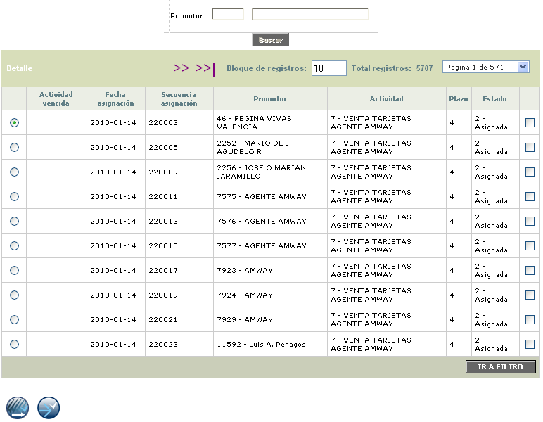
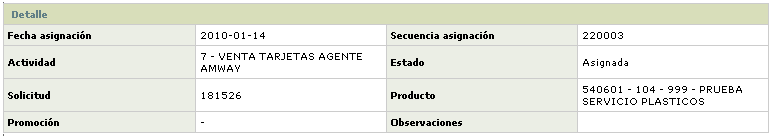

Actividades por promotor
Mediante esta función cada promotor tiene control sobre las tareas que le han sido asignadas y mediante la selección de aquellas que ya haya terminado, realizar una labor de actualización para finalizarlas. Es importante mencionar que las únicas tareas asignadas que se reflejaran en esta forma son las correspondientes al usuario con el cual se haya ingresado al sistema.
El formulario cuenta con las opciones Detalle y un filtro que permite buscar a través de la Promotor.

Actividad vencida |
Columna sobre la que aparece un signo de admiración cuando una actividad asignada no ha sido completamente finalizada y el plazo preestablecido ha sido rebasado. |
Fecha asignación |
Este campo muestra la fecha en formato YYYY-MM-DD en la cual se asignó la actividad al promotor. |
Secuencia asignación |
Número secuencial que el sistema otorga a cada tarea asignada. |
Promotor |
Despliega el usuario de la base de datos asociada al promotor para el cual se despliegan las actividades a su cargo. |
Actividad |
Muestra la actividad asignada a casa promotor. |
Plazo |
Contiene el número de días, definido en la opción actividades de este módulo, que se tiene como plazo para el cumplimiento de cada tarea, desde el momento de su inicio. |
Estado |
Campo que indica el estado actual de la tarea, y que puede tomar valores que van desde asignación hasta finalización. |
Detalle: Si el usuario invoca la opción Detalle se despliega el siguiente formulario.

Finalizar actividades : A través de estos botones, el sistema permite finalizar todas las actividades o sólo aquellas que hayan sido seleccionadas.